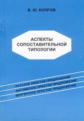
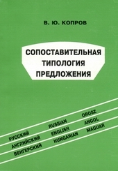
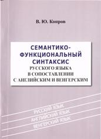
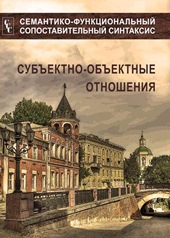
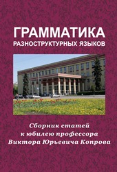

|  |
Копров В.Ю. Аспекты сопоставительной типологии простого предложения (на материале русского, английского и венгерского языков) / В.Ю. Копров. - Воронеж: ВГУ, 1999. - 160 с. К 65 ББК 81 ISBN 5-85815-104-3 Настоящая работа относится к числу сопоставительно-типологических. В центре внимания находится типология структурно-семантического устройства русского простого предложения в сопоставлении с английским и венгерским. Используется методика многоаспектного анализа устройства предложения, которая позволяет по-новому теоретически осмыслить и сформулировать ряд ранее не применявшихся принципов и критериев классификации синтаксических конструкций. Предложения анализируются раздельно по двум аспектам их организации: ситуативно-структурному и релятивно-структурному. Книга предназначена для специалистов в области общего и сопоставительного языкознания, преподавателей русского и иностранных языков, а также для аспирантов и студентов-филологов. |
|  |
Копров В.Ю. Сопоставительная типология предложения / В.Ю. Копров. - Воронеж: ВГУ, 2000. - 192 с. К 65 ББК 81 ISBN 5-9273-0050-2 В центре внимания находится номинативный аспект устройства простого предложения разноструктурных языков. Используется ряд новых критериев и принципов сопоставительной типологии предложения. Русские синтаксические конструкции рассматриваются в ситуативно-структурном и релятивно-структурном ракурсах в зеркале английских и венгерских конструкций. Книга предназначена для специалистов в области общего и сопоставительного языкознания, преподавателей грамматики иностранных языков и русского языка как иностранного, а также для изучающих теорию и практику перевода. |
|  |
Семантико-функциональный синтаксис русского языка в сопоставлении с английским и венгерским. / В.Ю. Копров. – Воронеж: Издатель О.Ю. Алейников, 2010. – 328 с. ББК 81.2-2 К658 ISBN 978-5-904686-04-8 Работа относится к теоретико-прикладному, «университетскому», направлению. На основе методики поаспектного анализа семантики и функционирования предложения по-новому решены некоторые спорные вопросы синтаксической теории и практики, русский синтаксис системно сопоставлен с английским и венгерским. В центре внимания находятся категории и компоненты номинативного аспекта предложения. Отдельно рассматриваются средства выражения субъектно-объектных отношений, локализации и посессивности в трех языках, а также отмечаются особенности синтаксиса русского официально-делового стиля на фоне английского. Книга рассчитана на студентов, магистрантов и аспирантов-филологов, специалистов по межкультурной коммуникации, переводчиков, преподавателей языков как иностранных. |
|  |
Семантико-функциональный сопоставительный синтаксис: Субъектно-объектные отношения / В.Ю. Копров, Т.Н. Козюра, А.Л. Лебедева, О.М. Дедова, И.М. Сушкова; под ред. В.Ю. Копрова. – Воронеж: Издательство «НАУКА-ЮНИПРЕСС», 2011. – 263 с. ББК 81.2-3 С30 ISBN 978-5-4292-0007-1 В коллективной монографии с единых теоретических позиций рассматривается семантика, структура и функционирование предложений, выражающих субъектно-объектные отношения в разноструктурных языках: физическое воздействие субъекта на объект в русском, английском и венгерском языках; зрительное восприятие в русском и французском языках; ситуации касания в русском и немецком языках; посессивность (обладание и принадлежность) в русском и английском языках. Предназначается для студентов, аспирантов, специалистов в области лингвистики, межкультурной коммуникации, перевода и преподавания языков как иностранных. |
|  |
Грамматика разноструктурных языков: сборник научных статей к юбилею профессора Виктора Юрьевича Копрова. – Воронеж: Изд-во «НАУКА-ЮНИПРЕСС», 2011. – 471 с. ББК 81.2-2. Г 76 ISBN 978-5-4292-0020-0 Сборник содержит статьи, посвященные юбилею профессора Воронежского государственного университета Виктора Юрьевича Копрова. Рассматриваются теоретические и практические вопросы грамматики разноструктурных языков. Грамматика понимается здесь как языковой уровень, объединяющий единицы всех других уровней языка. Во многих статьях используется развиваемый в работах юбиляра семантико-функциональный сопоставительный подход к изучению и преподаванию грамматики. Предназначается для лингвистов, специалистов по межкультурной коммуникации, преподавателей языков как иностранных, переводчиков, аспирантов языковых факультетов вузов России и зарубежных стран. См. рецензию: Сидорова М.Ю. Рецензия на книгу: Грамматика разноструктурных языков; Сб. к юбилею проф. В.Ю. Копрова / Воронеж. 2011 // Вестник МГУ. Серия 9. Филология. 2012. №4 с. 191-195 |